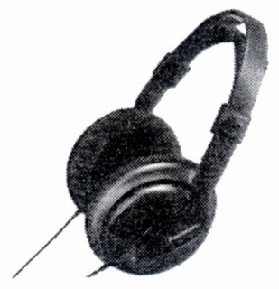

RP-HT138

■価格 7,000円■型式 ダイナミック型密閉式/オープンエアタイプ■振動板 ■インピーダンス 30Ω■再生周波数帯域 ■許容入力 1,000mW■感度 103dB/1mW■コード 6m ステレオ２ウェイプラグ■重量 135g/オープンエア時 175g/密閉時（コード含まず） ■発売 1996年6月■販売終了 1999年頃■備考 部品（イヤパッド等）の交換でオープン/密閉を切り替え
パナソニックのインデックスへ